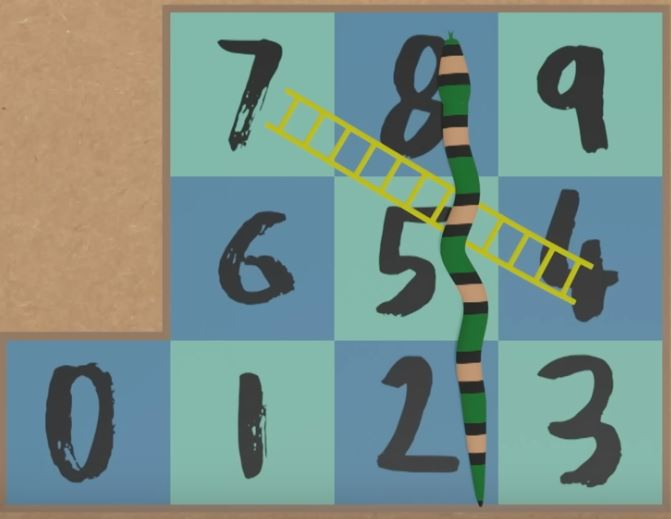

Snakes and Ladders
Introduction
With the basic data and programming structures in Python, we are ready to write some code to solve interesting questions.
Here is a question for you. Have you ever wondered how many rolls of the dice it would take on average to finish a game of Snakes and Ladders? In this section, we will create a simple simulation of the game to find out!
Game Rules
This is a single player mini snakes and ladders game (see the figure). You start at square 0 and move to square 9 following the rules below:
- Roll a 6-sided die and move forward the number of squares shown on the die.
- If you land on a square with a snake’s head, move back to the square with the snake’s tail.
- If you land on a square with a ladder’s bottom, move forward to the square at the top of the ladder.
- If you roll a number that would move you beyond square 9, move backwards from square 9 for the remaining steps.
- The game ends when you reach square 9.

Question
We want to find out the average number of rolls it takes to finish the game.
Simulation
How would you solve this problem?
One way is to simulate the game many times and calculate the average number of rolls it takes to finish the game. Let’s write a Python program to simulate the game. We will start by writing code for a single game run and then extend it to simulate multiple runs.
(You can also solve the problem mathematically. See this Numberphile video for more details: The Beautiful Math of Snakes and Ladders. In fact, this exercise is inspired by the video.)
Single Game Run
We will use the random library to simulate the dice rolls, and set a random seed to ensure reproducibility. We will write a function play_game() that simulates a single game run and returns the number of rolls it takes to finish the game 🐍🎲.
import random
random.seed(1)
def play_game():
# initialize the starting position and number of rolls
position = 0
rolls = 0
while position < 9:
# roll and count the number of rolls
roll = random.randint(1, 6)
rolls = rolls + 1
# if the roll moves the player beyond square 9
if position + roll > 9:
position = 9 - (position + roll - 9)
else:
position = position + roll
# check for snakes and ladders
# snake's head at 8
if position == 8:
position = 2
# ladder's bottome at 4
elif position == 4:
position = 7
return rolls
# run the game twice
print(play_game())
print(play_game())Multiple Game Runs
Now that we have a function to play the game. We will simulate the game multiple times and store the number of rolls it takes to finish each game in a list. We will then calculate the average number of rolls and plot a histogram of the number of rolls. We will use the matplotlib library to plot the histogram.
# define the number of simulations
num_sim = 10000
# initialize an empty list to store
# the number of rolls for each simulation
num_rolls = []
# simulate and append the number of rolls
# for each simulation to the list
for _ in range(num_sim):
num_rolls.append(play_game())
# the above code can be written more concisely
# using list comprehension
# num_rolls = [play_game() for _ in range(num_sim)]
# calculate the average number of rolls
avg_rolls = sum(num_rolls) / num_sim
print(avg_rolls)
# plot the histogram of the number of rolls
import matplotlib.pyplot as plt
plt.hist(num_rolls,
bins=range(1, max(num_rolls)+2),
edgecolor='black')
plt.title('Number of rolls to finish the game')
plt.xlabel('Number of rolls')
plt.ylabel('Frequency')
plt.show()